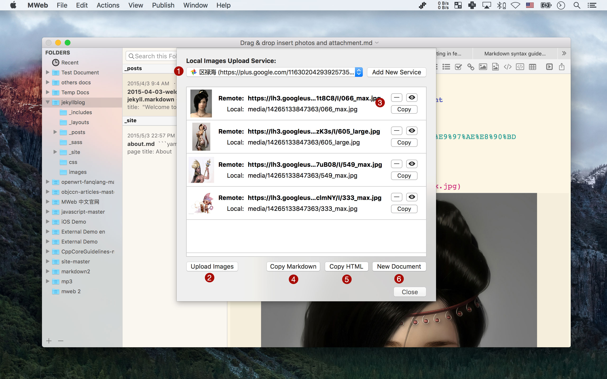

MWeb for Mac Documentation
Markdown syntax guide
If you didn't know Markdown, please check this post: Markdown syntax guide full version.
If you know Markdown, please check this post: Markdown syntax guide and writing on MWeb. You can also check MWeb's menu: Help - Markdown syntax.
MWeb External Mode UI
Menu: View - Open External or CMD + E to Open External Mode.
1 File name, click to change file name, add tags.
2 Word counter and Outline View. Shortcuts: CMD + 8.
3 For Live Preview, Export, Publish and Local Images Upload, please use this button. Shortcuts: CMD + 9.
4 Open Local Images Upload window.
5 Publish to Wordpress、Evernote、Medium etc...
6 Add a folder to MWeb, You can also Drag the folders to the sidebar.
7 Search the current selected folder's documents, support Full Text Search.
8 New document in current selected folder. Shortcuts: CMD + Shift + N。
2 Word counter and Outline View

9 Right click context menu.

9 Folder setting.
10 Right click context menu.
Publish and Local Images Upload
1 Supported services, click to add.
2 Installed services, Drag & Drop for custom sort.
3 Edit or Delete publish service.
4 Supported services, click to add.
5 Installed services.
Tips: Your can add read more for long post when publish to Wordpress, Blogger. Actions - Insert Read More Comment, like below:

Local Images Upload
1 Installed upload services list.
2 Upload button, click to start upload local images to selected upload service.
3 Delete, Preview and Copy buttons.
4 Replace the local images to remate images and copy.
5 Replace the local images to remate images and copy to HTML。
6 Replace the local images to remate images and create new document.
MWeb Library Mode UI

Menu: View - Open Library or CMD + L to open Library Mode.
1 Title
2 Document's setting. You can set the document's category, manager the images and attachments. Shortcuts: CMD + 7。
3 For create new category, sub category.
4 Categories list. You can Drag & Drop to sort the categories.
5 Selected Category documents list. You can Drag & Drop to sort the document when the Order by: set to Custom. Drag & Drop the document to category will move to that category, Holding CMD key will add, Option key will remove.
Notice: Library Mode UI is very similar with the External Mode UI.
4 Right click context menu.
4 Site Category setting.
5 Right click context menu.
More Info about Static blog/website generator.
MWeb's static blog generator is very easy to use, if you want to more info, please check these posts:
- Introducing static blog generator
- Add AddThis Share and Disqus Comment
- Custom site theme or design you owner theme
MWeb all themes now add to github: https://github.com/oulvhai/MWeb-Themes.
- mweb-Bootstrap-blog: this theme used for MWeb 中文官网
- mweb-Bootstrap-blog-EN: this theme used for MWeb Official Site
- New theme: mweb-medium-like, github: https://github.com/oulvhai/mweb-medium-like
- New theme: mweb-foundation-book, github https://github.com/oulvhai/mweb-foundation-book
If you want to publish your static blog to github pages, just check this link: https://pages.github.com/.
If you want to publish your static blog to FTP,SFTP etc...
Please check this post: Use GoodSync synchronize MWeb's static websites to FTP,SFTP,WebDAV,Amazon S3 automatically.
MWeb View Mode and some useful tips.
- If you always use External Mode, You can enable Preferences - General - Open the external source window on launch.
- MWeb use menu and Shortcuts to switch View Mode. For example, you can use
CMD + 3toggle Three Panes and Editor Only View Mode. Please check theViewmenu and try Shortcuts:CMD + 1/2/3/4 - When Preferences - General - Resize window when hide pane is enable, shortcuts
CMD + 1/2/3/4behavior will be changed. You can enable this option and try it. - Use menu View - Dark Mode to switch Dark Mode.
- Need help or have a question?
- Use
Help-Send Feedback - Email: coderforart+233@gmail.com
- Sina Weibo: @oulvhai
- Twitter：@oulvhai
- Use